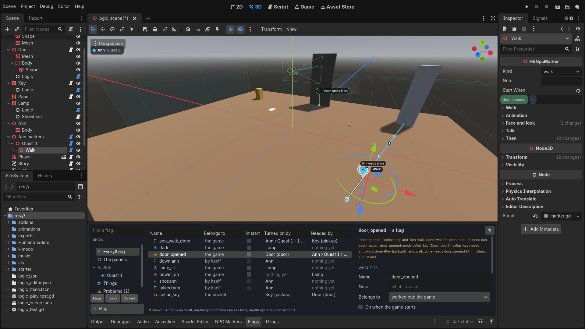
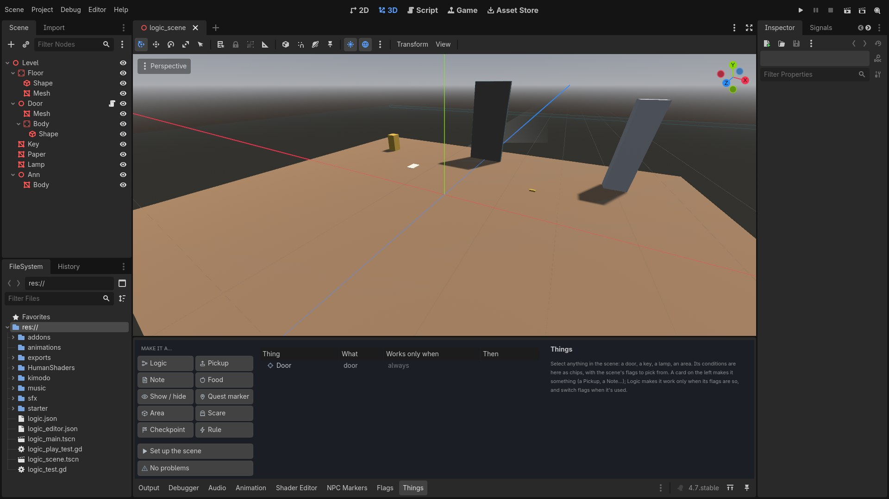
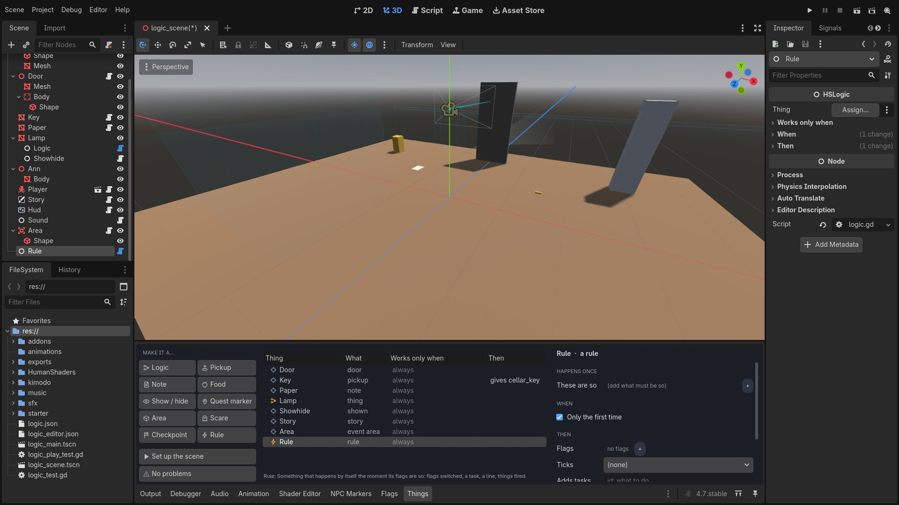
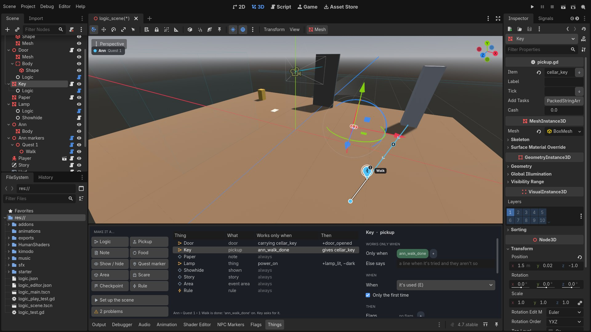
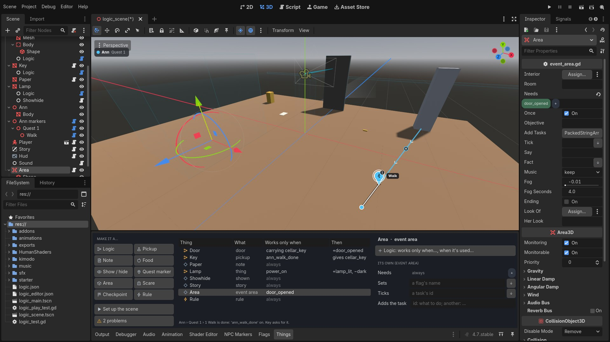
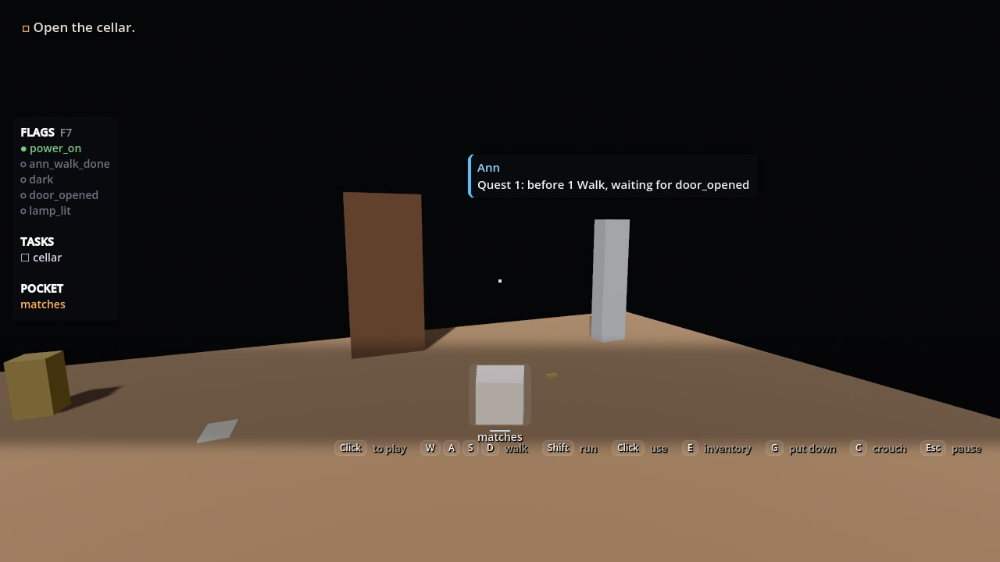

Flags and things
A door that only opens once someone has left. A character who only walks once a door is open. A button that switches the lights. One name ties them, a flag, and you never type it twice: you pick it, or you click the thing.
1What it is
A flag is a name that's on or off: alex_gone, cellar_open. Nothing has to list it
first. Anything can ask for it (a marker's Starts when, a door) and anything can
switch it (a marker's Then, a pickup, an answer in a conversation).
Two tabs sit along the bottom of the editor beside NPC Markers:
Things
Everything in the scene that isn't a character: doors, pickups, notes, areas, lamps. Cards make them; a form says what each works only when, and what it does then.
Flags
Every flag the scene names, with both its ends: who turns it on, who needs it. Rename one and every use moves.
Logic
The one node behind it: put under anything, that thing can ask for flags and switch them, in the same three lines a marker has.

door_opened picked: the door turns it on, Ann's Walk needs it. Both are marked in the room.2Set up the scene
Open Things. In a scene that's only a room, press Set up the scene: it adds what a game needs and the scene lacks, and nothing twice: the Player, the Story (the objective, the to-do list, the flags), the Hud and Sound.

python tools/godot_byhand.py install ~/Games/MyGame --starter. Scripts of yours that
differed are kept in starter_before/. The tab's Problems says so when it's needed.3Make a thing
Select a model in the scene, click a card:
| Logic | It works only when its flags are so, and switches flags when it's used. On anything, even a plain mesh: a lamp, a button, a painting become something you can press E on. |
| Pickup | Taken with E into the pocket under its name. A door locked by that name opens for it. |
| Note | Read with E: its words on a card. |
| Food | Taken, then eaten by holding the left button. |
| Show / hide | There, or not, by flags (Shown when, Hidden when). |
| Quest marker | A guide marker over it while its Needs hold. |
And these go where you click in the 3D view (the card stays pressed until you do; Esc lets it go):
| Area | A box that does something when you walk in: an objective, a task, a line, a flag. |
| Scare | A box that scares when you walk in. |
| Checkpoint | Walking in keeps the game; dying comes back here. |
| Rule | Not a place: something that happens by itself the moment its flags are so. |

4A thing's Logic
Select a thing: its form is three lines, the same three a marker has.
Works only when
Chips: flags that must be on (or off), a task done, something carried. While they aren't so, E on it does nothing but say its Else says line.
When
It's used (E); or one of its own signals (a door's opened, an area's body entered); or by itself, once its needs are so. Once, or every time.
Then
Flags switched (green: on, red: off, blue: flipped), a task ticked or added, a line, a sound, things fired.

Under the Logic, Its own: the fields the thing's script already has (a door's Locked by, an area's Needs and Sets), each with the same pickers. So "can only open the door while this flag is on" is the door's Logic, Only when, one tick.
5Tie a marker and a thing, one click each
A marker waits for a thing
- In NPC Markers, on the marker's Starts when, press + and choose A thing… (click it in the 3D view).
- Click the door.
The door gets a Logic that turns a flag on when it's opened (door_opened, named after it), and the
marker waits for that flag. A pickup's flag comes on when it's taken, an area's when you walk in.
A thing waits for a marker
- In Things, on the thing's Only when, press + and choose A character's marker… (click its pin).
- Click the pin.
That marker's Then turns a flag on when it's done (ann_walk_done), and the
thing asks for it.
6The Flags tab
Every flag, task and thing carried the scene names. Each row: whose it is, a tick for on when the game starts, who turns it on, who needs it. On the left: a search box, and what's shown (everything, the game's, one character's, one quest's, things', problems).
Pick one. On the right:
- Name: type over it and press Enter. It's renamed in every marker, conversation, Logic and script that names it; one Ctrl+Z takes it all back.
- Note: what it means, for you.
- Switched by and Needed by: every use as a row. Click one and you're there: a marker opens in NPC Markers, a thing in Things.
- Use it: on whatever is selected in the scene (needs it on, needs it off, turns it on, turns it off), or press Click a thing… and click it in the 3D view.
- The bin takes it out of everything.
+ Flag writes one down before anything uses it (type its name in the search box first). Typing a new name in any picker makes one too.
7Whose a flag is
A flag is one name everywhere: that's what lets a marker's flag open a door. But you don't have to look at all of them at once. Who a flag belongs to is worked out from who uses it:
| one quest's | only that quest's markers use it |
| one character's | only that character's markers do |
| the game's | a thing uses it, or two characters |
| by itself | the kit sets it: talked:ann, shot:ann, down:ann for every character with markers |
Click a character or a quest under Show and only its flags are listed. If you want a flag to stay a quest's own, set Belongs to: using it anywhere else then shows as a Problem.
8In the Inspector
The same chips are in the Inspector, on any node whose script has a field that names flags: a cue's
Needs, a shown thing's Shown When, a hunt's Ends
When, a door's Locked By, a script of your own with an exported needs.
The scene's flags are in each one's +.

9Problems
Both tabs count what can't work, and each takes you there:
- a flag something asks for and nothing turns on (a typo, usually);
- a flag switched that nothing asks for yet (a tip);
- a task used that nothing puts on the list;
- a quest's own flag used outside it;
- things that wait for each other: a key that can only be taken once Ann has walked, who only walks once the door is open, which only opens with the key. None of it can ever happen, and it says so, with who asks for what.
10In the game: F7
F7 shows, over each character, what they're doing and waiting for, and at the left every flag the scene names: the ones that are on bright, the rest dim; the tasks; the pocket. When something doesn't happen, its flag is there, and it's dim.

door_opened, and door_opened is dim.11The words, and what's not there
You never have to type these, but a condition is words apart by commas, all of which must be so:
name | the flag is on (!name: off) |
task:id | that task is ticked |
on:id | that task is on the list and not ticked yet |
item:name | you carry it |
Flags switched: +name on, -name off, ~name flipped.
From a script, if you want one:
HSNpcCond.set_flag(get_tree(), "cellar_open") # a flag, with or without a Story
if HSLogic.may_use(thing, self): # ask a thing's Logic yourself
thing.use(self)
HSLogic.was_used(thing, self)